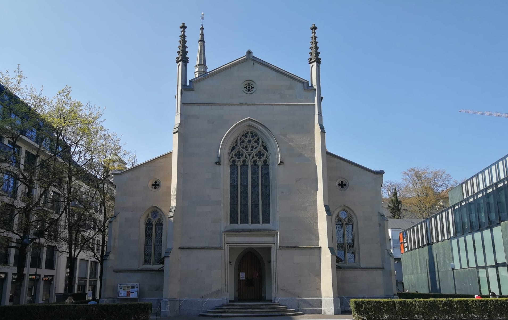
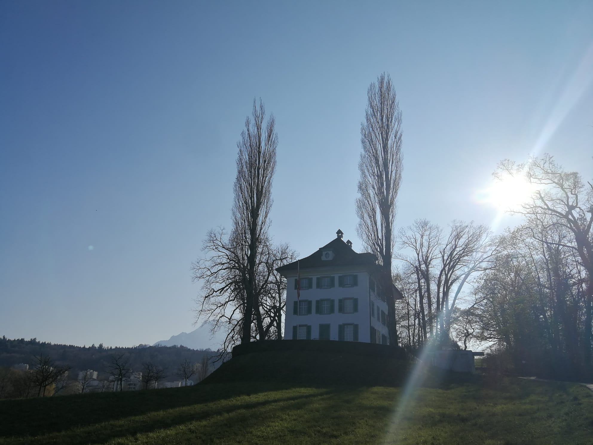

Matthäuskirche: Wagner oder Filmmusik?
Matthäuskirche
Wohnhaus Wagner / Wagnermuseum

Richard - Wagner - Büste
Die Matthäuskirche wurde 1860/61 gebaut und gilt als die erste protestantische Kirche in der Zentralschweiz.
Das Grundstück hat das Hotel Schweizerhof zur Verfügung gestellt und der Zürcher Architekt Ferdinand Stadler entwarf die dreischiffige, neugotische Basilika.
In dieser Kirche hat einer der wichtigsten Opernkomponisten der Spätromantik, Richard Wagner, geheiratet.
Er heiratete Cosima Liszt am 25.
August 1870, nachdem sie sich von ihrem Ehemann hat scheiden lassen.
Seit 1866 lebten die zwei mit ihren Kindern in der Villa Tribschen in Luzern und hier konnte Wagner viel komponieren und beendete er zwei seiner bekanntesten Opern, «Tristan und Isolde» und «Die Meistersinger von Nürnberg».
Richard Wagner hat eine neue Musikgattung erschaffen: Das Musikdrama.
Das Musikdrama ist ein Gesamtkunstwerk, bei der Musik, Malerei und Schauspiel gemeinsam ein ganzes Kunstwerk bilden.
Richard Wagner war von seiner neuen Musikgattung angetan und wollte sein eigenes Festspielhaus haben, wo nur seine Musik gespielt werden sollte.
1876 hat er sein eigenes Festspielhaus in Bayreuth erhalten.
Musik:
- Richard Wagner, Lohengrin: Hochzeitsmarsch- Richard Wagner, Die Walküre: Ritt der Walküren
zurück Weiter